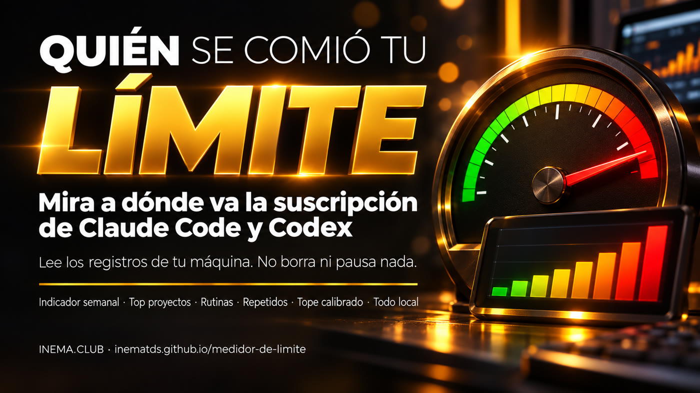
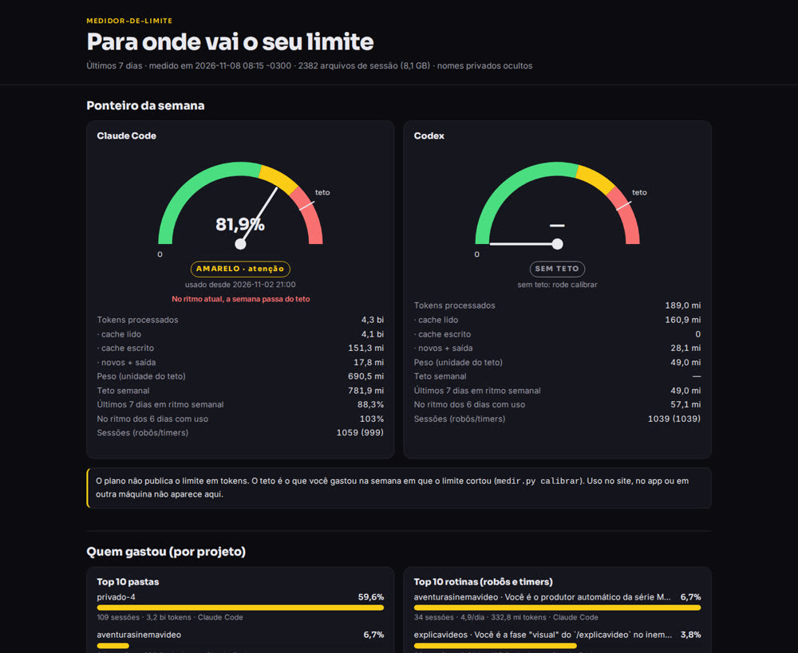
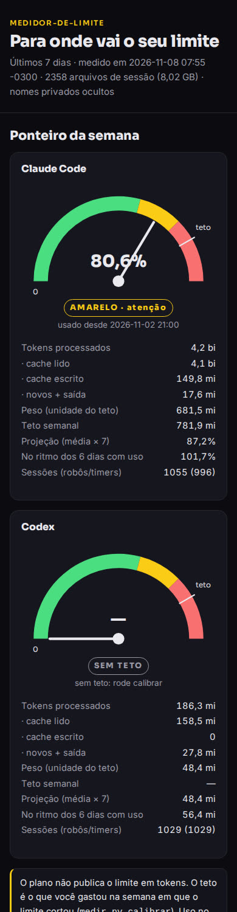

Un indicador verde, amarillo o rojo, los proyectos que más consumen y los robots que repiten el mismo trabajo.

medidor-de-limite es un programa pequeño que lee los registros que Claude Code y Codex ya guardan en tu computadora y muestra adónde fue el límite de tu suscripción. Sirve para quienes usan mucho estos asistentes, sobre todo con robots y tareas programadas, y llegan al límite semanal sin saber quién lo consumió. Indica qué proyectos consumen más y qué tareas repetidas se podrían combinar. Solo necesita Python 3: no usa internet ni claves, y no borra ni pausa nada.
El plan dice que tienes un límite semanal, pero no dice cuántos tokens son ni quién los consume. El medidor lo calcula a partir de tus propios registros.
Verde por debajo del 70% del límite, amarillo hasta el 90% y rojo por encima. Siempre con la etiqueta escrita, no solo el color.
Top 10 por carpeta de proyecto, por sesión y por rutina (las tareas de robot agrupadas por el primer pedido).
Robots con el mismo pedido que se ejecutan el mismo día con menos de una hora de diferencia: candidatos a convertirse en una sola ejecución.
Todo ocurre en tu computadora. El contenido de las conversaciones nunca aparece: solo números y el comienzo del pedido, con hasta 80 caracteres y sin correo electrónico, enlaces ni rutas de carpetas.
Casi todo lo que pasa por el modelo es caché leída, que cuesta poco. Por eso el indicador usa el peso: cada tipo de token cuenta en proporción al precio público (Claude: nuevo 1, caché escrita 1,25, caché leída 0,1, salida 5). El informe muestra ambos números.
El plan no publica el límite en tokens. Cuando se alcanza el límite, Claude Code guarda "You've hit your weekly limit" en el registro. El comando calibrar encuentra ese mensaje y suma lo que gastaste esa semana: ese es tu límite. El uso en el sitio web, la app o en otra computadora no aparece aquí.
Funciona donde Claude Code o Codex ya se ejecutan y guardan registros (~/.claude/projects y ~/.codex/sessions). Elige tu sistema y pega los comandos, uno a la vez.
Python 3 ya viene instalado. Si falta git:
sudo apt install -y git python3 python3 --version
El primer comando instala las herramientas de Apple, que incluyen git y Python 3.
xcode-select --install python3 --version
En PowerShell como administrador, instala Ubuntu y reinicia. Después, en Ubuntu:
wsl --install sudo apt install -y git python3
Si Claude Code se ejecuta en Windows (fuera de WSL), indica su carpeta en el paso 2 con --claude-dir /mnt/c/Users/TU_USUARIO/.claude/projects; el Codex de Windows entra con --codex-home /mnt/c/Users/TU_USUARIO/.codex. Lo que corre del lado de Windows y no indiques queda fuera de la cuenta.
Los comandos son los mismos en Linux, Mac y Ubuntu de WSL.
Es una carpeta con un archivo Python y la página del indicador. No instala nada en el sistema.
git clone https://github.com/inematds/medidor-de-limite.git cd medidor-de-limite
Muestra los totales de Claude Code y Codex, el top 10 de proyectos, el top 10 de rutinas y las tareas repetidas. Un historial de 8 GB se procesa en menos de medio minuto porque se lee línea por línea y se omite lo que no es un conteo.
python3 medir.py relatorio
Para otro período, usa --dias 14. Si tienes dos cuentas de Codex, cada una en una carpeta, encuentra ~/.codex, ~/.codex-2 y $CODEX_HOME; puedes agregar otra carpeta con --codex-home.
Busca el mensaje de límite semanal de los últimos 35 días y suma lo que se gastó esa semana. Revisa el número y guárdalo.
python3 medir.py calibrar python3 medir.py calibrar --salvar
¿No encontró ningún corte? Indica cuándo ocurrió o escribe un número manualmente. El número está en la unidad peso, la misma que relatorio muestra por herramienta: parte del peso de una semana en la que estuviste cerca del límite.
python3 medir.py calibrar --estourou-em "2026-10-26 18:00" --salvar python3 medir.py calibrar --ferramenta codex --teto 60000000 --salvar
Genera una página con el indicador animado, las barras por proyecto y rutina, el gráfico día a día y la tabla de tareas repetidas. Funciona en el celular.
python3 medir.py html --saida medidor.html xdg-open medidor.html
En Mac, cambia xdg-open por open. En WSL, usa explorer.exe medidor.html.
El medidor solo sugiere. Busca el temporizador o la tarea programada que activa la rutina repetida y decide si la combinas en una sola ejecución.
systemctl --user list-timers crontab -l
Con --anonimo, las carpetas cuyos nombres no están en una lista pública se convierten en privado-1, privado-2… y sus pedidos desaparecen. La lista es un archivo de texto con un nombre por línea.
python3 medir.py html --anonimo --publicos publicos.txt --saida medidor.html
Medido el 08/11/2026, con --anonimo. Los archivos completos están en la carpeta exemplos/ del repositorio; la página está en vivo aquí.
tokens procesados en Claude Code en 7 días; el 96% eran caché leída
del límite semanal usado desde el lunes a las 21 h: indicador amarillo
del peso de los 7 días provino de una sola carpeta de proyecto
ejecuciones de robot repetidas en el mismo horario, en 91 grupos


Conviene saberlo antes de confiar en el indicador.
--teto).